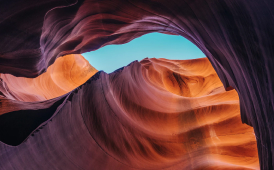

- Date
- July 2019
- Location
- Moroccan Highlands
- Camera
- Canon EOS1D Mark IV
- Lens
- 70mm f2.8 @ 1/16”
Minerals carvings
Deep in the deserts of Morroco, lies a dried-up valley, featuring some of the most exquisite rock formations, carved millions of years ago.
To truly experience these beautiful formations, one has to visit them in person. I hope my photos have managed to capture the sheer size – gravitas even – and spellbinding nature of these eroded walls.